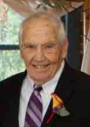
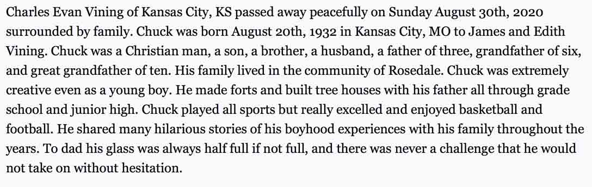
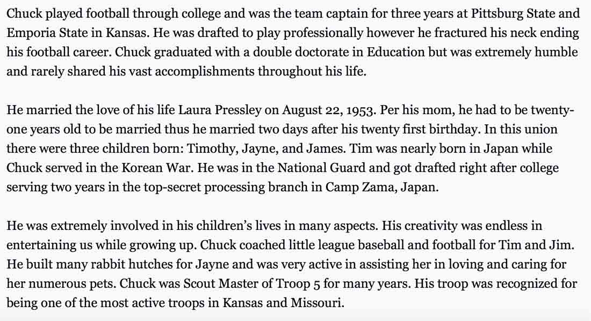
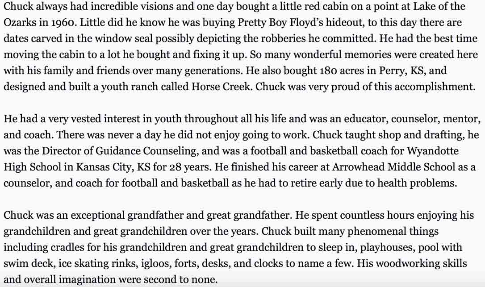
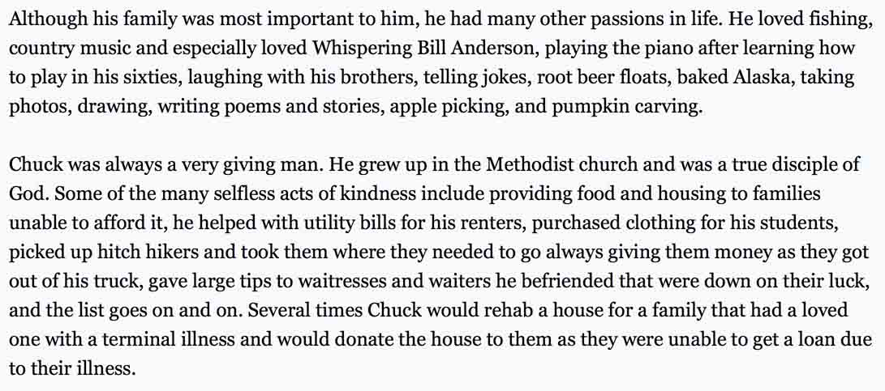
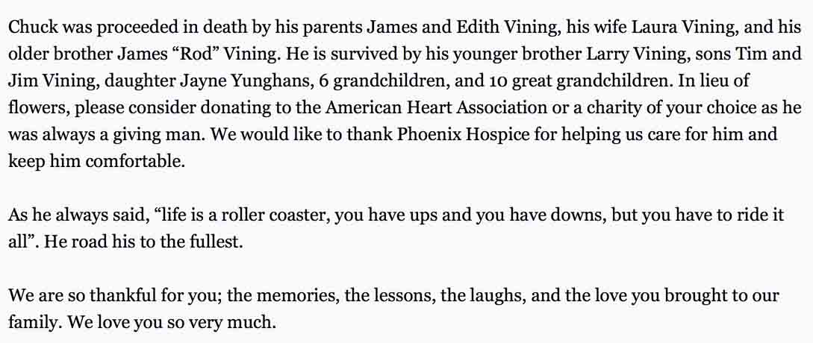
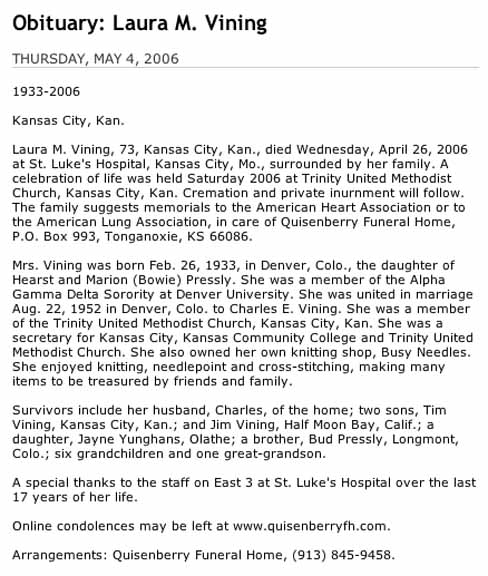

Documentation for Charles Evan Vining - Laura M. Pressly

Death Data
Obituary for Charles Even Vining, from the website of Penwell-Gabel Funderal Home. Thursday, 4 May 2006 issue.





Obituary for Laura M. (Pressly) Vining, from the Bonner Springs-Edwardsville Chieftain (online posting), Bonner Springs, Kansas; Thursday, 4 May 2006 issue.
